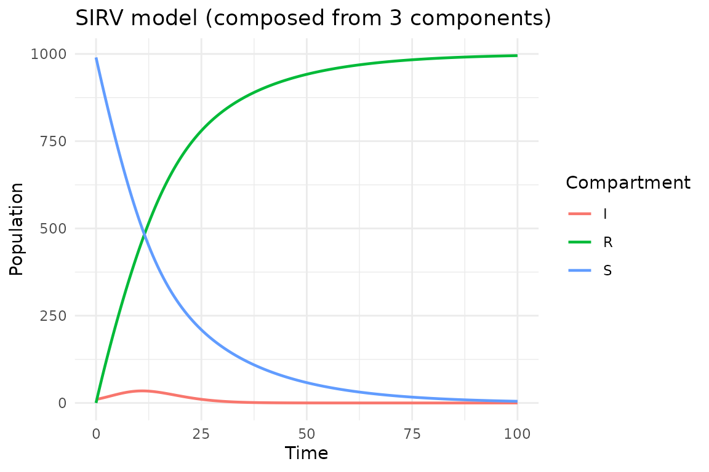

Introduction
The central idea of algebraicodin is compositional modeling: build complex models by assembling reusable components. Instead of writing a monolithic SIR model, we define infection and recovery as separate open Petri nets, then compose them by declaring how they share species.
This approach mirrors the mathematical framework of AlgebraicPetri.jl and uses undirected wiring diagrams (UWDs) from applied category theory to specify the composition pattern.
library(algebraicodin)
#>
#> Attaching package: 'algebraicodin'
#> The following objects are masked from 'package:base':
#>
#> %o%, %x%Building blocks
An open Petri net is a Petri net with designated legs—species that are exposed for composition. The package provides helpers for common epidemiological transitions:
# Infection: S + I → I + I (frequency-dependent transmission)
infection <- exposure_petri("S", "I", "I", "inf")
# Recovery: I → R (spontaneous transition)
recovery <- spontaneous_petri("I", "R", "rec")Each component is self-contained with its own species and transitions. The legs expose species that will be identified during composition.
plot_petri(infection)
plot_petri(recovery)Composing with the %o% operator
The simplest way to compose two open Petri nets is the
%o% operator, which automatically identifies species with
matching names:
sir_composed <- infection %o% recovery
species_names(apex(sir_composed))
#> [1] "S" "I" "R"
transition_names(apex(sir_composed))
#> [1] "inf" "rec"Species “I” appears in both components, so it gets identified (shared). The result is the standard SIR model.
plot_petri(sir_composed)
sir_code <- pn_to_odin(apex(sir_composed), "ode")
cat(sir_code)
#> ## Auto-generated by algebraicodin
#>
#> ## Parameters
#> inf <- parameter()
#> rec <- parameter()
#>
#> ## Initial conditions
#> S0 <- parameter()
#> I0 <- parameter()
#> R0 <- parameter()
#>
#> initial(S) <- S0
#> initial(I) <- I0
#> initial(R) <- R0
#>
#> ## Transition rates
#> rate_inf <- inf * S * I
#> rate_rec <- rec * I
#>
#> ## Derivatives
#> deriv(S) <- -rate_inf
#> deriv(I) <- rate_inf - rate_rec
#> deriv(R) <- rate_recComposing with wiring diagrams
For more control, define an explicit undirected wiring
diagram (UWD) and use oapply(). The UWD specifies
junctions (shared species) and boxes (components):
w_sir <- catlab::uwd(
outer = c("S", "I", "R"),
infection = c("S", "I"),
recovery = c("I", "R")
)
sir_via_uwd <- oapply(w_sir, list(infection, recovery))
species_names(apex(sir_via_uwd))
#> [1] "S" "I" "R"The UWD approach is equivalent to %o% for two components
but generalises naturally to more complex diagrams.
plot_uwd(w_sir)Extending to SEIR
Adding an exposed compartment requires a third component—progression from E to I:
# Exposure: S + I → E + I (infectious contact produces exposed, not infectious)
exposure <- exposure_petri("S", "I", "E", "exp")
# Progression: E → I
progression <- spontaneous_petri("E", "I", "prog")
# Compose with explicit UWD
w_seir <- catlab::uwd(
outer = c("S", "E", "I", "R"),
exposure = c("S", "I", "E"),
progression = c("E", "I"),
recovery = c("I", "R")
)
seir <- oapply(w_seir, list(exposure, progression, recovery))
species_names(apex(seir))
#> [1] "S" "E" "I" "R"
transition_names(apex(seir))
#> [1] "exp" "prog" "rec"The wiring diagram shows how the three components share species:
plot_uwd(w_seir)
plot_petri(seir)
cat(pn_to_odin(apex(seir), "ode"))
#> ## Auto-generated by algebraicodin
#>
#> ## Parameters
#> exp <- parameter()
#> prog <- parameter()
#> rec <- parameter()
#>
#> ## Initial conditions
#> S0 <- parameter()
#> E0 <- parameter()
#> I0 <- parameter()
#> R0 <- parameter()
#>
#> initial(S) <- S0
#> initial(E) <- E0
#> initial(I) <- I0
#> initial(R) <- R0
#>
#> ## Transition rates
#> rate_exp <- exp * S * I
#> rate_prog <- prog * E
#> rate_rec <- rec * I
#>
#> ## Derivatives
#> deriv(S) <- -rate_exp
#> deriv(E) <- rate_exp - rate_prog
#> deriv(I) <- rate_prog - rate_rec
#> deriv(R) <- rate_recComparison: composed vs hand-written SEIR
The hand-written odin2 SEIR model:
seir_handwritten <- "
exp <- parameter()
prog <- parameter()
rec <- parameter()
S0 <- parameter()
E0 <- parameter()
I0 <- parameter()
R0 <- parameter()
initial(S) <- S0
initial(E) <- E0
initial(I) <- I0
initial(R) <- R0
rate_exp <- exp * S * I
rate_prog <- prog * E
rate_rec <- rec * I
deriv(S) <- -rate_exp
deriv(E) <- rate_exp - rate_prog
deriv(I) <- rate_prog - rate_rec
deriv(R) <- rate_rec
"Let us run both and verify they produce identical trajectories:
# Algebraic version
gen_alg <- odin2::odin(pn_to_odin(apex(seir), "ode"))
#> ✔ Wrote 'DESCRIPTION'
#> ✔ Wrote 'NAMESPACE'
#> ✔ Wrote 'R/dust.R'
#> ✔ Wrote 'src/dust.cpp'
#> ✔ Wrote 'src/Makevars'
#> ℹ 13 functions decorated with [[cpp11::register]]
#> ✔ generated file cpp11.R
#> ✔ generated file cpp11.cpp
#> ℹ Re-compiling odin.system523a0040
#> ── R CMD INSTALL ───────────────────────────────────────────────────────────────
#> * installing *source* package ‘odin.system523a0040’ ...
#> ** this is package ‘odin.system523a0040’ version ‘0.0.1’
#> ** using staged installation
#> ** libs
#> using C++ compiler: ‘g++ (Ubuntu 13.3.0-6ubuntu2~24.04.1) 13.3.0’
#> g++ -std=gnu++17 -I"/opt/R/4.5.3/lib/R/include" -DNDEBUG -I'/home/runner/work/_temp/Library/cpp11/include' -I'/home/runner/work/_temp/Library/dust2/include' -I'/home/runner/work/_temp/Library/monty/include' -I/usr/local/include -DHAVE_INLINE -fopenmp -fpic -g -O2 -Wall -pedantic -fdiagnostics-color=always -c cpp11.cpp -o cpp11.o
#> g++ -std=gnu++17 -I"/opt/R/4.5.3/lib/R/include" -DNDEBUG -I'/home/runner/work/_temp/Library/cpp11/include' -I'/home/runner/work/_temp/Library/dust2/include' -I'/home/runner/work/_temp/Library/monty/include' -I/usr/local/include -DHAVE_INLINE -fopenmp -fpic -g -O2 -Wall -pedantic -fdiagnostics-color=always -c dust.cpp -o dust.o
#> g++ -std=gnu++17 -shared -L/opt/R/4.5.3/lib/R/lib -L/usr/local/lib -o odin.system523a0040.so cpp11.o dust.o -fopenmp -L/opt/R/4.5.3/lib/R/lib -lR
#> installing to /tmp/RtmpP42nT1/devtools_install_28c1346e44d3/00LOCK-dust_28c11d86a67a/00new/odin.system523a0040/libs
#> ** checking absolute paths in shared objects and dynamic libraries
#> * DONE (odin.system523a0040)
#> ℹ Loading odin.system523a0040
pars <- list(exp = 0.001, prog = 0.2, rec = 0.1,
S0 = 990, E0 = 0, I0 = 10, R0 = 0)
sys_alg <- dust2::dust_system_create(gen_alg, pars, n_particles = 1)
dust2::dust_system_set_state_initial(sys_alg)
t <- seq(0, 100, by = 0.5)
y_alg <- dust2::dust_system_simulate(sys_alg, t)
# Hand-written version
gen_hw <- odin2::odin(seir_handwritten)
#> ℹ Using cached generator
sys_hw <- dust2::dust_system_create(gen_hw, pars, n_particles = 1)
dust2::dust_system_set_state_initial(sys_hw)
y_hw <- dust2::dust_system_simulate(sys_hw, t)
cat("Max absolute difference:", max(abs(y_alg - y_hw)), "\n")
#> Max absolute difference: 0The outputs match exactly—both compile to the same C++ system.
Adding vaccination: SIRV
We can extend SIR with a vaccination transition (S → R at rate
vac):
vaccination <- spontaneous_petri("S", "R", "vac")
w_sirv <- catlab::uwd(
outer = c("S", "I", "R"),
infection = c("S", "I"),
recovery = c("I", "R"),
vaccination = c("S", "R")
)
sirv <- oapply(w_sirv, list(infection, recovery, vaccination))
cat(pn_to_odin(apex(sirv), "ode"))
#> ## Auto-generated by algebraicodin
#>
#> ## Parameters
#> inf <- parameter()
#> rec <- parameter()
#> vac <- parameter()
#>
#> ## Initial conditions
#> S0 <- parameter()
#> I0 <- parameter()
#> R0 <- parameter()
#>
#> initial(S) <- S0
#> initial(I) <- I0
#> initial(R) <- R0
#>
#> ## Transition rates
#> rate_inf <- inf * S * I
#> rate_rec <- rec * I
#> rate_vac <- vac * S
#>
#> ## Derivatives
#> deriv(S) <- -rate_inf - rate_vac
#> deriv(I) <- rate_inf - rate_rec
#> deriv(R) <- rate_rec + rate_vac
plot_uwd(w_sirv)
plot_petri(sirv)
gen <- odin2::odin(pn_to_odin(apex(sirv), "ode"))
#> ✔ Wrote 'DESCRIPTION'
#> ✔ Wrote 'NAMESPACE'
#> ✔ Wrote 'R/dust.R'
#> ✔ Wrote 'src/dust.cpp'
#> ✔ Wrote 'src/Makevars'
#> ℹ 13 functions decorated with [[cpp11::register]]
#> ✔ generated file cpp11.R
#> ✔ generated file cpp11.cpp
#> ℹ Re-compiling odin.systemd0eef7b9
#> ── R CMD INSTALL ───────────────────────────────────────────────────────────────
#> * installing *source* package ‘odin.systemd0eef7b9’ ...
#> ** this is package ‘odin.systemd0eef7b9’ version ‘0.0.1’
#> ** using staged installation
#> ** libs
#> using C++ compiler: ‘g++ (Ubuntu 13.3.0-6ubuntu2~24.04.1) 13.3.0’
#> g++ -std=gnu++17 -I"/opt/R/4.5.3/lib/R/include" -DNDEBUG -I'/home/runner/work/_temp/Library/cpp11/include' -I'/home/runner/work/_temp/Library/dust2/include' -I'/home/runner/work/_temp/Library/monty/include' -I/usr/local/include -DHAVE_INLINE -fopenmp -fpic -g -O2 -Wall -pedantic -fdiagnostics-color=always -c cpp11.cpp -o cpp11.o
#> g++ -std=gnu++17 -I"/opt/R/4.5.3/lib/R/include" -DNDEBUG -I'/home/runner/work/_temp/Library/cpp11/include' -I'/home/runner/work/_temp/Library/dust2/include' -I'/home/runner/work/_temp/Library/monty/include' -I/usr/local/include -DHAVE_INLINE -fopenmp -fpic -g -O2 -Wall -pedantic -fdiagnostics-color=always -c dust.cpp -o dust.o
#> g++ -std=gnu++17 -shared -L/opt/R/4.5.3/lib/R/lib -L/usr/local/lib -o odin.systemd0eef7b9.so cpp11.o dust.o -fopenmp -L/opt/R/4.5.3/lib/R/lib -lR
#> installing to /tmp/RtmpP42nT1/devtools_install_28c14c5d0bd3/00LOCK-dust_28c15d48dfe4/00new/odin.systemd0eef7b9/libs
#> ** checking absolute paths in shared objects and dynamic libraries
#> * DONE (odin.systemd0eef7b9)
#> ℹ Loading odin.systemd0eef7b9
pars <- list(inf = 0.0005, rec = 0.25, vac = 0.05,
S0 = 990, I0 = 10, R0 = 0)
sys <- dust2::dust_system_create(gen, pars, n_particles = 1)
dust2::dust_system_set_state_initial(sys)
y <- dust2::dust_system_simulate(sys, t)
df <- data.frame(
time = rep(t, 3),
value = c(y[1, ], y[2, ], y[3, ]),
compartment = rep(c("S", "I", "R"), each = length(t))
)
library(ggplot2)
ggplot(df, aes(time, value, colour = compartment)) +
geom_line(linewidth = 0.8) +
labs(title = "SIRV model (composed from 3 components)",
x = "Time", y = "Population", colour = "Compartment") +
theme_minimal()
Using the epidemiology dictionary
For convenience, epi_dict() provides pre-built
components for common transitions:
dict <- epi_dict()
names(dict)
#> [1] "infection" "recovery" "vaccination" "waning"
#> [5] "death" "exposure" "progression" "hospitalization"You can compose a model directly from the dictionary using
compose_epi():
w <- catlab::uwd(
outer = c("S", "I", "R"),
infection = c("S", "I"),
recovery = c("I", "R")
)
sir <- compose_epi(w, dict, c("infection", "recovery"))
species_names(apex(sir))
#> [1] "S" "I" "R"Composing more than two components
The compose() function chains multiple %o%
operations:
sirh <- compose(
exposure_petri("S", "I", "I", "inf"),
spontaneous_petri("I", "R", "rec"),
spontaneous_petri("I", "H", "hosp"),
spontaneous_petri("H", "R", "hosp_rec")
)
species_names(apex(sirh))
#> [1] "S" "I" "R" "H"
transition_names(apex(sirh))
#> [1] "inf" "rec" "hosp" "hosp_rec"Summary
| Method | Syntax | Best for |
|---|---|---|
%o% |
a %o% b |
Quick binary composition |
oapply() |
oapply(uwd, components) |
Full control via wiring diagrams |
compose() |
compose(a, b, c) |
Chaining multiple components |
compose_epi() |
compose_epi(uwd, dict, names) |
Dictionary-based workflows |
The compositional approach ensures that every shared species is
correctly identified and that stoichiometry is preserved across
components. For stratification by age, risk, or vaccination status, see
vignette("stratification").